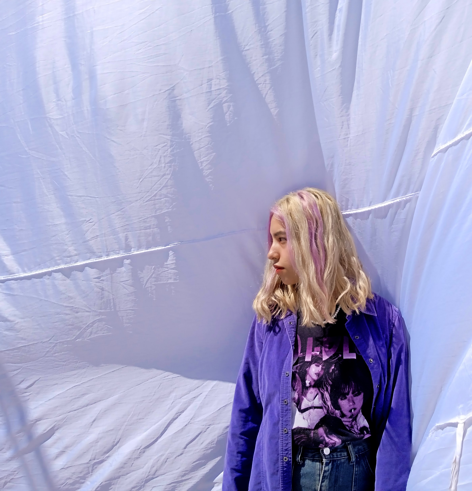
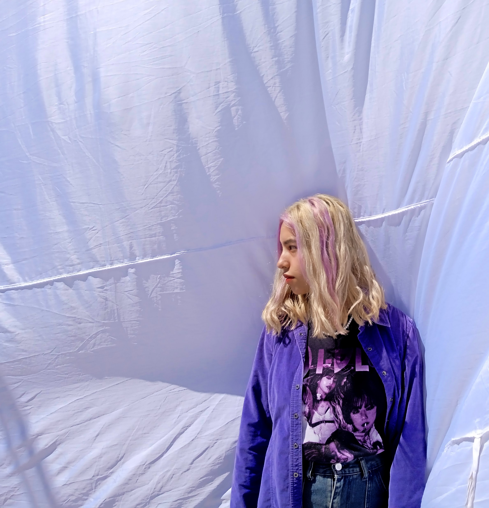
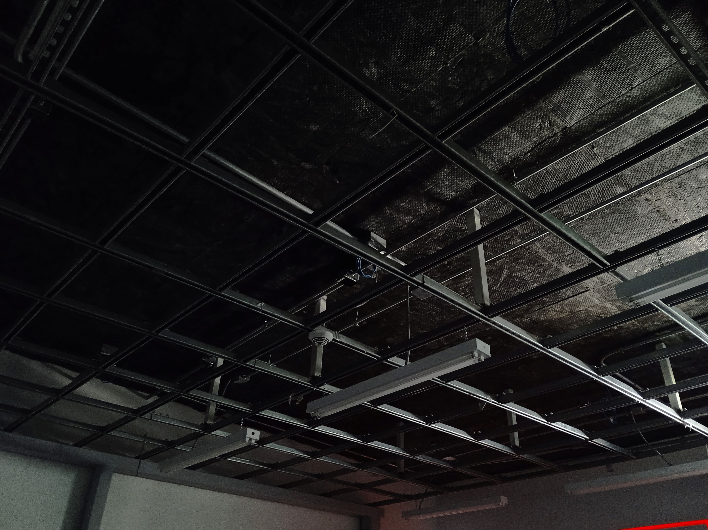
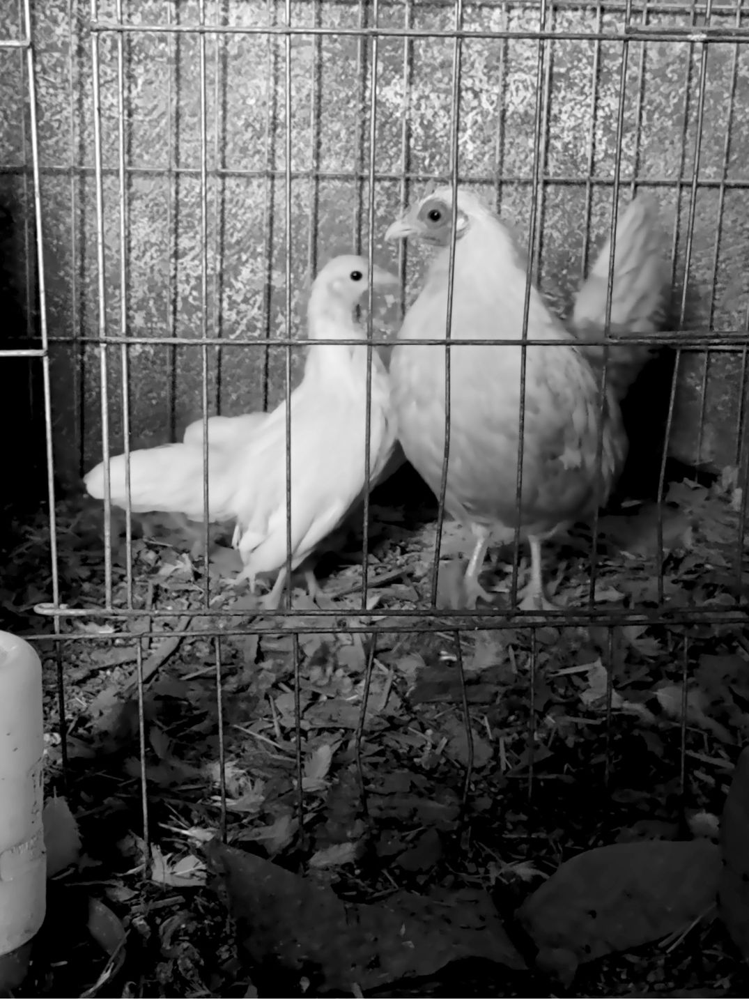
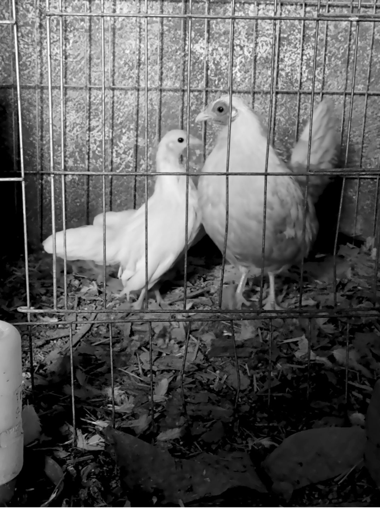

ALUZA
2023
Serie Fotográfica
Desde los reflejos de los cristales hasta la puesta de sol, luces y sombras se complementan para orientar la mirada hacia el ocaso.

A ojo abierto no penetra luz aun cuando por la ventana entra a raudales, que ante tristeza aguda, la pupila dilata solo a limitaciones. Receptor dañado solo en su código, mecanicidad inaccesible. Asirse al resplandor precario es lo único posible.
Textores
2023
Serie Fotográfica
Textores explora la textura y colores de objetos cotidianos invitando a la observación detallada de objetos en la cotidianidad.
Pasares
2023-presente
Serie Fotográfica
Recorriendo la ciudad a través de miradas puntuales.


(Re)Tratos
2023
Serie Fotográfica
De ellos hacia mi y de mí hacia ellos. (Re)Tratos no son solo fotografías, sino, más bien, cartas en fotografías. Cada una testigo de como mi mirada y las miradas de personas importantes en mi vida se entrelazan creando una imagen de ellos.
 

Eclipses
2023
Serie Fotográfica
Eclipses es una reinterpretación de los eclipses lunares, resaltando los rojos vibrantes sobre los fondos negros y grises.
Miradas de la Granja
2023
Serie Fotográfica
Retrata la vida de los animales en una granja familiar, resaltando sus miradas, personalidades y formas de organización.

 
